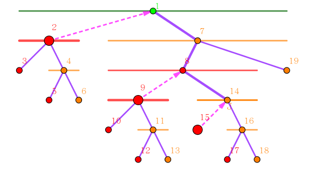

线段树是九条可怜很喜欢的一个数据结构，它拥有着简单的结构、优秀的复杂度与强大的功能，因此可怜曾经花了很长时间研究线段树的一些性质。
最近可怜又开始研究起线段树来了，有所不同的是，她把目光放在了更广义的线段树上：在正常的线段树中，对于区间 $[l, r]$，我们会取 $m = \left \lfloor \dfrac {l+r} 2 \right \rfloor$，然后将这个区间分成 $[l, m]$ 和 $[m+1, r]$ 两个子区间。
在广义的线段树中，$m$ 不要求恰好等于区间的中点，但是 $m$ 还是必须 满足 $l \leq m < r$ 的。不难发现在广义的线段树中，树的深度可以达到 $O(n)$ 级别。
例如下面这棵树，就是一棵广义的线段树：

为了方便，我们按照先序遍历给线段树上所有的节点标号，例如在上图中，$[2, 3]$ 的标号是 $5$，$[4, 4]$ 的标号是 $9$，不难发现在 $[1, n]$ 上建立的广义线段树，它共有着 $2n - 1$ 个节点。
考虑把线段树上的定位区间操作 (就是打懒标记的时候干的事情) 移植到广义线段树上，可以发现在广义的线段树上还是可以用传统的线段树上的方法定位区间的，例如在上图中，蓝色节点和蓝色边就是在定位区间 $[2, 4]$ 时经过的点和边，最终定位到的点是 $[2, 3]$ 和 $[4, 4]$。
如果你对线段树不熟悉，这儿给出定位区间操作形式化的定义：给出区间 $[l, r]$，找出尽可能少的区间互不相交的线段树节点，使得它们区间的并集恰好是 $[l, r]$。
定义 $S_{[l, r]}$ 为定位区间 $[l, r]$ 得到的点集，例如在上图中，$S_{[2, 4]} = \{5, 9\}$。定义线段树上两个点 $u, v$ 的距离 $d \left( u, v \right)$ 为线段树上 $u$ 到 $v$ 最短路径上的边数，例如在上图中 $d \left( 5, 9 \right) = 3$。
现在可怜给了你一棵 $[1, n]$ 上的广义的线段树并给了 $m$ 组询问，每组询问给出三个数 $u, l, r$ ($l \leq r$)，可怜想要知道 $\displaystyle \sum_{v \in S_{[l, r]}} d \left( u, v \right)$。
第一行包含一个正整数 $n$ ($2 \leq n \leq 2 \times 10^5$)，线段树区间的长度。
第二行包含 $n - 1$ 个空格隔开的整数：按照标号递增的顺序，给出广义线段树上所有非叶子节点的划分位置 $m$。不难发现通过这些信息就能唯一确定一棵 $\left[ 1, n \right]$ 上的广义线段树。
接下来一行，包含一个正整数 $m$ ($1 \leq m \leq 2 \times 10^5$)，表示询问的组数。
接下来 $m$ 行，每行三个正整数 $u, l, r$ ($1 \leq u \leq 2 n - 1; 1 \leq l \leq r \leq n$)，描述一组询问。
对于每组询问，输出一行一个整数，表示上式的值。
在考虑一般区间定位之前，先考虑一个特殊的情形——定位一个前缀 $\left[ 1, r \right]$。
由 [uoj217]奇怪的线段树 中的结论，对于任何一个区间，它都能对应到一堆右节点紧跟着一堆左节点 (左节点和右节点的定义见那一题)。
而对于一个前缀，则可以发现，它可以对应到一系列连续的左节点。
于是我们需要求若干左节点到一个给定节点 $u$ 的距离之和。
考察这些左节点有什么性质。设线段树的树形结构为 $T$，根节点为 $R$，则可以发现，如果对于两个左节点 $n_1, n_2$，$n_2$ 的左端点等于 $n_1$ 的右端点 $+ 1$，则在 $T$ 中 $n_1$ 的父节点为 $n_2$ 的父节点的祖先节点。
从而，如果一些左节点是连续的 (即前一个左节点的右端点为后一个左节点的左端点)，则它们在 $T$ 中的父节点一定在一条深度递增的链上，如下图所示：
因此，任何一个前缀定位，都可以转化为：对于一条树上的 (深度递增的) 链，对于链上每个有左子树的节点，求它的左子节点 $v$ 与给定节点 $u$ 的距离的总和。
由树上距离公式 $\mathrm{dist}(u, v) = d_u + d_v - 2 d_{lca(u, v)}$，其中 $d(v)$ 表示点 $v$ 在树 $T$ 中的深度 (定义 $d(R) = 0$)，因此将式子拆开后就得到
$$ \sum_v \mathrm{dist}(u, v) = \sum_v \left( d_u + d_v - 2 d_{lca(u, v)} \right) = d_u \cdot cnt + \sum_v d_v - 2 \sum_v d_{lca(u, v)} \tag 1 \label 1 $$
其中 $cnt$ 表示这样的左节点的个数，$\displaystyle \sum_v d_v$ 则是这些节点的深度和。
由于这些节点是 $T$ 中根 $R$ 到某个节点的路径上的所有左子节点 (如果存在)，因此可以在 dfs 的过程中使用前缀和记录。
于是对于前缀区间 $\left[ 1, r \right]$，它对应的路径 (链) 就是
$\eqref 1$ 式中的最后一项也是最难求细节最多的一项：对于任给的 $u$，求 $\displaystyle \sum_v d_{lca(u, v)}$。
设 $w = lca(u, r + 1)$ 为 $u$ 和 $r + 1$ 对应的叶节点的最近公共祖先。则如果 $p_v$ 在链 $\left( w, r + 1 \right]$ 中，则 $lca(u, v) = w$，因此，我们需要统计这部分的点的个数，然后乘上 $d_w$ 即可。
如果 $p_v$ 在链 $\left[ R, w \right)$ 上，则 $lca(u, v) = p_v$，此时，我们只需要统计深度前缀和，这也是我们记录过的信息。
最后一种较为特殊的情况为 $p_v = w$ 的情形。此时，如果 $u$ 和 $v$ 在 $w$ 的同一子树中，则 $lca(u, v) = v$，否则，$lca(u, v) = w$。
这种情况我们可以直接特判解决。
于是，我们使用树上前缀和成功地解决了 $\eqref 1$ 式的第三项，于是前缀询问问题得到解决。时间复杂度 $O \left( n + m \right)$ (如果使用 $O(n)-O(1)$ LCA)。
接下来考虑一般的区间定位 $\left[ l, r \right]$。
还是上面的结论，任何一个区间可以对应到一段连续的右节点紧跟着连续的左节点。于是我们考虑分开来求和。
首先，右节点求和的那套理论和左节点的类似，只不过是把上面的 "前缀" 改成了 "后缀"。
接下来就是找这两列点的 "交汇点" 了。
可以发现，它们的交汇点恰好就是 $l - 1$ 和 $r + 1$ 的 LCA，设为 $c$。
因此，还是利用前缀和的思想，用链 $\left[ 1, r + 1 \right]$ 的答案减去 $\left[ 1, c \right]$ 的答案即可。
不过这里并不是恰好是 $c$，需要做一点微调。因为 $c$ 的左子节点 $lc(c)$ 是不对答案产生贡献的。因此我们需要减去 $\left[ 1, lc(c) \right]$ 的答案。当然，右节点部分同理。
最后要说的是，由于上面分析中涉及到诸如 $l - 1, r + 1$ 这类表达式，因此需要对 $l = 1, r = n$ 的情况进行特判。
当 $l = 1, r = n$ 时，线段树会定位到根节点 $R$ (这也是根节点 $R$ 被定位到的唯一途径)，此时答案就是 $d(u)$。
当 $l = 1, r \neq n$ 时，此时被定位到的是一个前缀，于是只需要统计左节点的相关信息即可。
当 $l \neq 1, r = n$ 时，此时被定位到的是一个后缀，于是只需要统计右节点的相关信息即可。
当 $l \neq 1, r \neq n$ 时，此时被定位到的是一个普通的区间，求出 LCA 后分成四段计算 (两段左节点、两段右节点)。
总时间复杂度 $O \left( n + m \right)$ (如果使用 $O(n)-O(1)$ LCA)。
#include <bits/stdc++.h>
#define lg2(x) (31 - __builtin_clz(x))
typedef long long ll;
const int N = 400054;
struct node {
int L, R, lc, rc;
node (int _L = 0, int _R = 0) : L(_L), R(_R), lc(0), rc(0) {}
} x[N];
int n, q, cnt = 0;
int w[N];
int build(int L, int R) {
int id = ++cnt, M; x[id] = node(L, R);
return L == R ? w[L] = id : (scanf("%d", &M), x[id].lc = build(L, M), x[id].rc = build(M + 1, R), id);
}
namespace Tree {
const int M = N * 2, LN = 21;
int p[N], dep[N], count[2][N]; ll sdep[2][N];
int cnt, id[N], st[LN][M], *ord = *st;
inline int dmin(const int x, const int y) {return dep[x] < dep[y] ? x : y;}
void dfs(int x) {
int l = ::x[x].lc, r = ::x[x].rc;
ord[cnt] = x, id[x] = cnt++;
if (!(l && r)) return;
dep[l] = dep[r] = dep[x] + 1;
count[0][l] = count[0][x], count[1][l] = count[1][x] + 1;
count[1][r] = count[1][x], count[0][r] = count[0][x] + 1;
sdep[0][l] = sdep[0][x], sdep[1][l] = sdep[1][x] + dep[x] + 1;
sdep[1][r] = sdep[1][x], sdep[0][r] = sdep[0][x] + dep[x] + 1;
dfs(l), ord[cnt++] = x, dfs(r), ord[cnt++] = x;
}
void build_st_table() {
int *f, *g = ord, i, j, k = cnt;
for (j = 0; 1 << (j + 1) <= cnt; ++j) {
f = g; g = st[j + 1]; k -= 1 << j;
for (i = 0; i < k; ++i)
g[i] = dmin(f[i], f[i + (1 << j)]);
}
}
inline int LCA(int x, int y) {
int L = std::min(id[x], id[y]), R = (id[x] ^ id[y] ^ L) + 1, c = lg2(R - L);
return dmin(st[c][L], st[c][R - (1 << c)]);
}
ll compute(int u, int v, int d) {
int w = LCA(u, v), *c = count[d], F = u != v && (d ? x[u].R <= x[w].lc[x].R && x[w].rc[x].L <= x[v].L : x[v].R <= x[w].lc[x].R && x[w].rc[x].L <= x[u].L); ll *s = sdep[d];
return s[u] + (ll)dep[v] * c[u] - ((ll)dep[w] * (c[u] - c[w]) + (s[w] - c[w]) + F) * 2;
}
}
int main() {
int n, v, l, r, c; ll ans;
scanf("%d", &n);
build(1, n), assert(cnt == 2 * n - 1);
Tree::dfs(1), Tree::build_st_table();
for (scanf("%d", &q); q; --q) {
scanf("%d%d%d", &v, &l, &r), ans = 0;
if (l == 1 && r == n) {printf("%d\n", Tree::dep[v]); continue;}
if (r < n) ans += Tree::compute(w[r + 1], v, 0);
if (l > 1) ans += Tree::compute(w[l - 1], v, 1);
if (l > 1 && r < n) c = Tree::LCA(w[l - 1], w[r + 1]), ans -= Tree::compute(x[c].rc, v, 0) + Tree::compute(x[c].lc, v, 1);
printf("%lld\n", ans);
}
return 0;
}
坑1：在求 $\eqref 1$ 式的最后一项时，不要忘记 $p_v = w$ 的特殊情形。类似地，在统计答案时，减掉的是 $lc(c)$ 对应的答案而不是 $c$ 对应的答案。